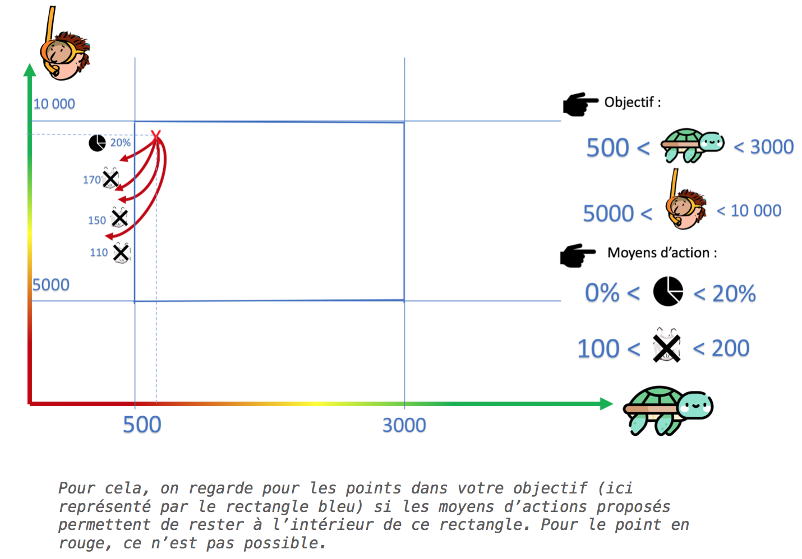

Préférences :
Choix des objectifs :
Nombres d'animaux
Capital des infrastructures de pêche (en dollards)
Nombre de touristes par mois en moyenne sur un an
Choix des moyens d'actions :
Restauration de l'environnement
Proportion de l'aire protégée fermée au tourisme
Nous allons à présent calculer le noyau de viabilité : c’est à dire que nous allons regarder si vos objectifs
par rapport au nombre de tortues,
de touristes et des l’infrastructures de pêche sont cohérents avec les moyens que vous vous donner pour y arriver.
Appuyer sur les flèches droite et gauche pour faire défiler les explications.

 ❮
❯
❮
❯
